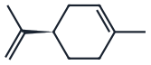
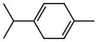
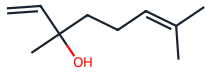
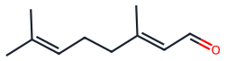
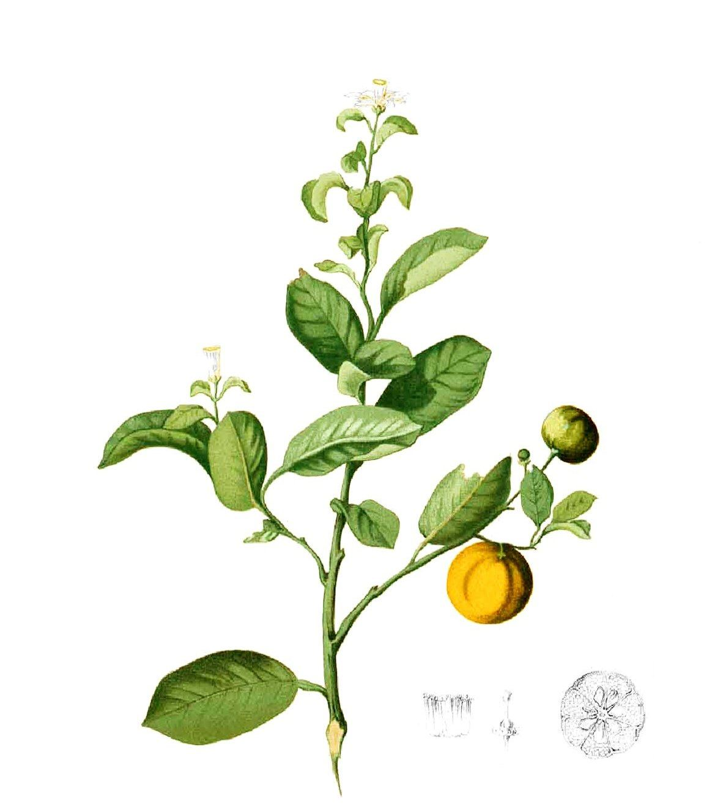

Hervir a 98 lo que hierve a 176
Diseñe y dimensione una planta que extrae aceite esencial de la cáscara que deja una juguera
El limoneno hierve a 176 °C. Arrastrado con vapor sale por debajo de 100 °C, porque el agua y el aceite son inmiscibles y cada uno ejerce su presión de vapor pura. Esa diferencia, 176 contra 98, es el fenómeno sobre el que se monta toda una industria, y es el punto de partida de su proyecto. Durante el semestre su equipo diseñará la planta que la aprovecha: recibe la cáscara que una juguera descarta y entrega aceite esencial rectificado, dimensionado operación por operación y validado en ASPEN Plus.
El equilibrio, en vivo
Mueva la presión del extractor. Vea a qué temperatura hierve la mezcla de agua y limoneno, y cuánto aceite arrastraría cada kilo de vapor si mandara el equilibrio.
En Bogotá la presión es de unos 75 kPa, y la mezcla hierve cerca de 90 °C (89,6 °C). Los valores salen de las ecuaciones de Antoine del agua y del limoneno, este último ajustado a su punto de ebullición normal: son orientativos y no reemplazan el modelo termodinámico de ASPEN.
El equilibrio, en números: a 101,3 kPa la mezcla de agua y limoneno hierve a 97,6 °C, y cada kilo de vapor arrastraría 0,69 kg de aceite si mandara el equilibrio. Una planta real saca unos 13 gramos por kilo de vapor, 53 veces menos. En Bogotá, a unos 75 kPa, la mezcla hierve a 89,6 °C. Los valores salen de las ecuaciones de Antoine del agua y del limoneno; la versión en pantalla de esta guía trae la calculadora.
El reto
No es un ejercicio de cálculo aislado. Es una planta que tiene que funcionar como un sistema, donde el tamaño al que desgarre la cáscara reaparece en el rendimiento del extractor, y la pureza que le exija a la columna reaparece en el consumo de vapor. Al terminar el semestre, su equipo habrá:
- Seleccionado y justificado una materia prima de descarte, con datos propios de disponibilidad regional y contenido de aceite esencial.
- Dimensionado las operaciones unitarias que conectan la cáscara con el aceite rectificado.
- Explicado por qué el extractor consume unas cincuenta veces más vapor del que predice el equilibrio, y qué hacer con esa brecha.
- Validado los cálculos manuales en ASPEN Plus, y explicado con honestidad dónde el simulador deja de ser confiable.
- Defendido el diseño en un documento técnico y en la sustentación de pósters de la semana 17.
Las ocho etapas
Cada etapa corresponde a un módulo del curso, y llega la semana en que su equipo la necesita para cerrar un balance. El proyecto las obliga a conversar entre sí: ninguna se diseña en el vacío.
Lima Tahití, naranja Valencia, mandarina o toronja, caracterizada por humedad, contenido de aceite esencial y volumen disponible en la región.
El mapa de la planta antes de dimensionar nada. Es la herramienta con la que va a discutir cada decisión posterior. El P&ID se aprende y se practica en el Taller 1, pero no se entrega.
Suspensión de la cáscara en el tanque de lavado y reducción a 5 a 10 mm. El tamaño de partícula fija el rendimiento del arrastre.
Equilibrio de líquidos inmiscibles, relación de vapor y tiempo de lote. La primera columna del proyecto, y la que extrae el producto.
Bombeo del hidrolato y del aceite, pérdidas en tubería, verificación de NPSH y generación del vapor vivo.
El condensador del arrastre es la carga térmica dominante de la planta. El decantador separa aceite y agua por densidad, sin energía.
El aceite que sale del florentino todavía lleva agua, en gotas finas que lo enturbian y disuelta. Se enfría a 5 a 10 °C para que el agua y lo poco pesado que arrastró el vapor se separen, y pasa por un filtro de profundidad, cuyo medio de celulosa retiene las trazas de agua, la turbidez y las partículas finas (Pall Corporation). No es el desencerado del aceite prensado en frío: las ceras de la cáscara no son volátiles y casi no pasan con el vapor (patente US 5362714). De aquí sale el aceite listo para rectificar.
Entre 10 y 20 mbar, para bajar las temperaturas de la columna: a presión atmosférica el fondo, rico en oxigenados como el linalol y el geranial, que hierven por encima de 195 °C, se degradaría. La pureza que especifique es una decisión económica, no un número dado.
La materia prima decide
La cáscara que escoja decide el resto del proyecto. El contenido de aceite fija el tamaño del extractor y la carga del condensador; la humedad de entrada define el consumo de vapor; el perfil de oxigenados cambia dónde hay que cortar en la columna; y el volumen disponible en la región determina si la planta tiene sentido fuera del papel. Empiece por los datos, no por la preferencia del grupo.
Contenido de aceite esencial en la cáscara (base húmeda, orientativo)
Valores típicos de literatura, no medidos, y con rangos amplios según variedad, madurez y método. Su equipo debe acotar el rango real de su materia prima y citar la fuente, con su número de muestras.
La lima rinde más aceite por kilo de cáscara, pero la naranja sale de las jugueras en volúmenes mucho mayores y puede inclinar el balance. Cada equipo recibe su propia base de carga y sus propios cambios de proceso durante el semestre. Justifique la elección con números, no con la intuición del grupo.
Hidrocarburos terpénicos: la mayor parte del aceite

(R)-LimonenoC10H16
γ-TerpinenoC10H16Oxigenados: pocos, pero dan el aroma

LinalolC10H18O
Geranial (citral a)C10H16O
Dónde ASPEN no alcanza
ASPEN Plus simula con rigor buena parte del proceso. La columna de rectificación al vacío es su terreno fuerte: con un bloque riguroso puede contrastar su McCabe-Thiele manual, ver cómo la presión mueve la volatilidad relativa y comprobar por qué el diámetro se dispara cuando el vapor se vuelve menos denso. Las bombas, el condensador y el flash también tienen bloques dedicados.
Dos detalles deciden si la columna simulada se parece a la real. Entre 10 y 20 mbar, la caída de presión pesa tanto como el número de etapas: unos pocos milibares de más en el fondo cambian su temperatura, y por eso estas columnas se hacen con empaque estructurado. Declare la caída de presión en el bloque de la columna en vez de dejarla en cero. Y el decantador florentino se representa con un flash de tres fases o con un decantador que resuelva el equilibrio líquido-líquido entre el aceite y el agua.
El arrastre de vapor no se simula tal cual. Lo que ASPEN resuelve es el equilibrio de dos fases líquidas inmiscibles, y eso predice una relación de vapor unas cincuenta veces menor que la real, porque el paso que manda no es el equilibrio sino la hidrodifusión: el vapor condensa, hidrata el tejido, revienta las glándulas y el aceite difunde a la superficie. Ningún bloque modela eso. El extractor se dimensiona con el conjunto de datos de rendimiento contra tiempo que publica el curso con la lectura del arrastre de vapor, y el simulador sirve para cerrar el balance, no para predecir el rendimiento.
Revise si el par limoneno-agua trae parámetros binarios regresados de datos o estimados por un método de contribución de grupos. No es lo mismo, y la diferencia cambia la temperatura a la que su sistema dice que hierve la mezcla. Reportar esa verificación es parte del trabajo.
Los rendimientos de aceite y los precios de mercado que use deben venir de una fuente citable, con su rango y su número de muestras. Un rendimiento tomado del mejor caso de un artículo, presentado como típico, infla toda la economía del proyecto. Cite el rango, no el extremo que le conviene.
Qué se entrega
El diseño avanza en cuatro bitácoras de cálculo, cada una con su coevaluación, y cierra con el documento técnico y la sustentación de pósters de la semana 17. El uso de IA en el proyecto está en el Nivel 3 de la escala AIAS: puede usarla para refinar y mejorar la claridad, declarándola en cada entrega.
Bitácoras de cálculo
Cada bitácora documenta un bloque del proceso con sus cálculos, supuestos y diagramas. La secuencia sigue el flujo de la planta:
- Bitácora 1. Materia prima, diagramas del proceso y manejo de sólidos. El tamaño de partícula se justifica, no se supone.
- Bitácora 2. Transporte de fluidos, tanque de lavado agitado y servicios de la planta.
- Bitácora 3. Arrastre de vapor, condensación, decantador florentino y winterización. Aquí se explica la brecha entre el equilibrio y la planta.
- Bitácora 4. Rectificación al vacío, validación en ASPEN Plus y balance económico de la planta completa.
Rúbrica del diseño
La calificación mira tres cosas en cada entrega. Revíselas antes de escribir, no después.
| Dimensión | Qué se espera | Peso |
|---|---|---|
| Modelado y dimensionamiento | Los modelos son apropiados para cada operación, los cálculos son correctos y los supuestos quedan declarados. | 40% |
| Criterio de diseño | Las decisiones consideran factores económicos, ambientales y de seguridad, y se justifican con datos. | 30% |
| Comunicación técnica | Diagramas claros, bitácora ordenada, fuentes citadas y declaración de uso de IA. | 30% |